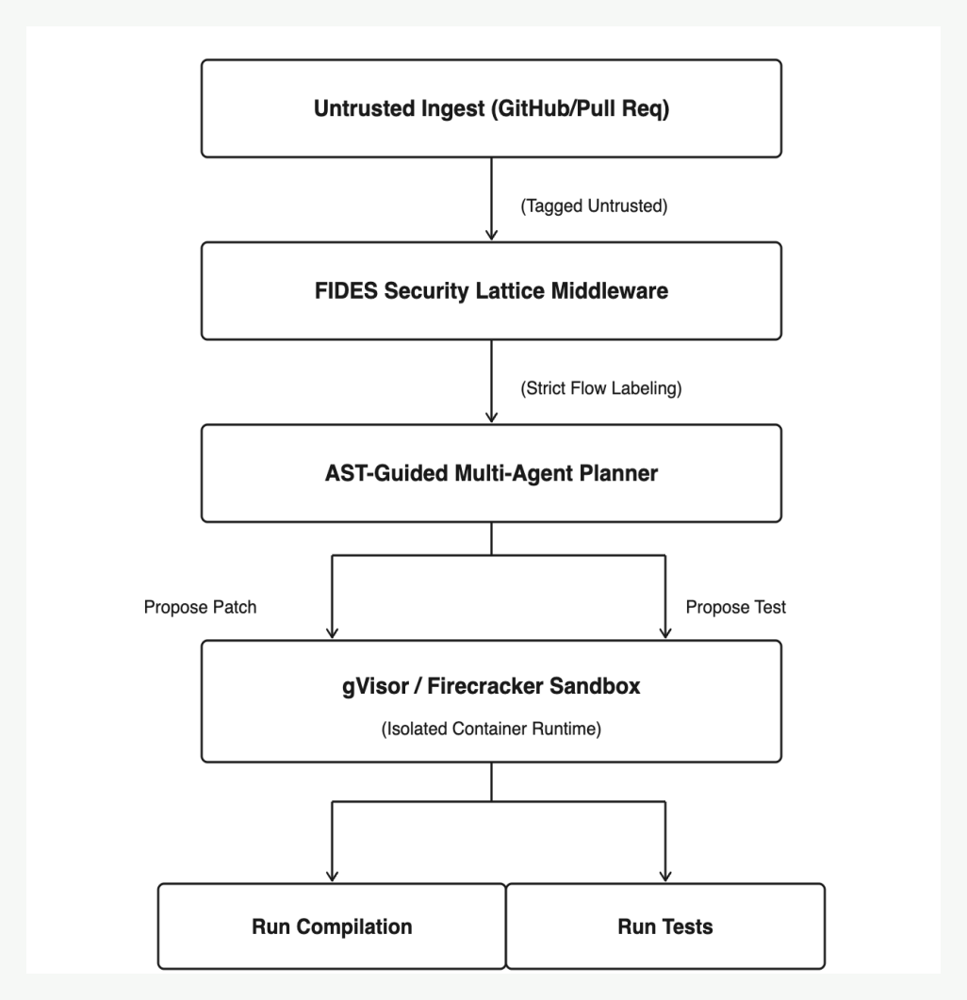

Reduce unsafe autonomy
The design treats autonomy as useful only when bounded by permissions, reversible execution, and clear evidence trails.
Technical Case Study
A sandboxed autonomous software-evolution concept designed around one hard question: how can AI modify code continuously while respecting security boundaries, auditability, and operational control?
Architecture
Aegis-Evo frames autonomous engineering as a governed loop: map the codebase, propose changes, validate in isolation, enforce policy, and only then promote outputs with traceable evidence.
System Flow

Case Study Notes
The design treats autonomy as useful only when bounded by permissions, reversible execution, and clear evidence trails.
Every generated change is routed through sandbox testing and policy checks before it can become a promoted result.
The full writeup includes architecture rationale, continuous-evolution workflow, security framing, and evaluation notes.